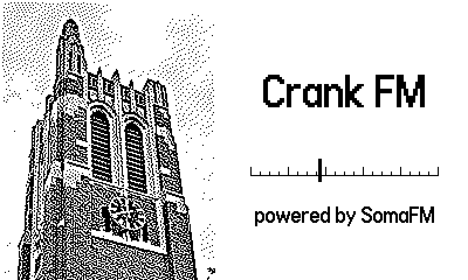
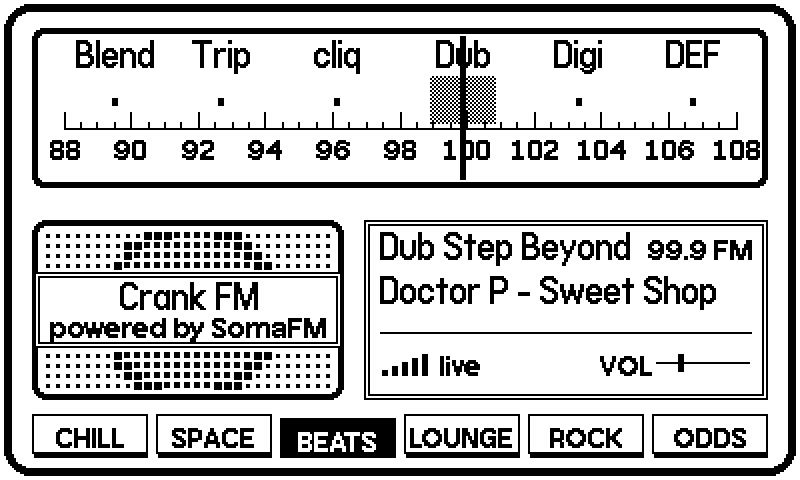

Playdate app · source code only
Internet radio for the Playdate, tuned with the crank like an old tabletop radio. Turn the dial and you hear static; come close to a station and its music breaks through, muffled and wavering, until it settles in clear as the needle reaches it.


A dial from 88 to 108, with six bands of six stations: chill, space, beats, lounge, rock and pop, and the odd ones.
The crank turns the dial. ⬅️ and ➡️ jump to the next station, Ⓑ changes band, ⬆️ and ⬇️ set the volume.
The name of the song playing, signal bars, a speaker grille that pulses with the music, and a lamp that glows when you are tuned in.
Real stereo in headphones; on the speaker, a mono mix at the same loudness.
It is written in C, because the Playdate's simpler Lua tools cannot play sound from the internet. The app streams each station as MP3 over Wi-Fi and decodes it on the Playdate itself. The static, the muffling and the warble are mixed in live, depending on how far the dial is from the station, so finding a station sounds the way it does on a real radio.
The Playdate's Wi-Fi is only just fast enough for a 128 kbps stream, so the app keeps a buffer of a few seconds, and makes it longer by itself if the signal gets weak. A limiter keeps loud songs from crackling on the small speaker.
Every station in Crank FM is from SomaFM, a listener-supported internet radio station that has been on the air since 2000. Their terms say they cannot allow third-party apps to use their streams, even free ones, because of how their music is licensed. I asked, and I do not have their permission, so Crank FM stays on my own Playdate.
If you would like to hear these stations, listen to them at somafm.com, and support them if you can.
Maybe one day it can be available: if SomaFM ever allows it, or in a version where you add your own stations.
The code is free for anyone who wants it (MIT licence). It is the whole radio (the dial, the static, the decoder, the buffer, the sound), with SomaFM's stations and name taken out: it builds and runs, and plays once you add stations whose owners allow it. src/stations.h explains what a station needs.
Made by Boraq Abdulmajeed and Nityaansh Parekh. Streams by SomaFM; MP3 decoding by minimp3 (public domain). The start-screen photo of Beaumont Tower is Boraq's own. Playdate is a trademark of Panic Inc.; this project is not made or endorsed by Panic or SomaFM.